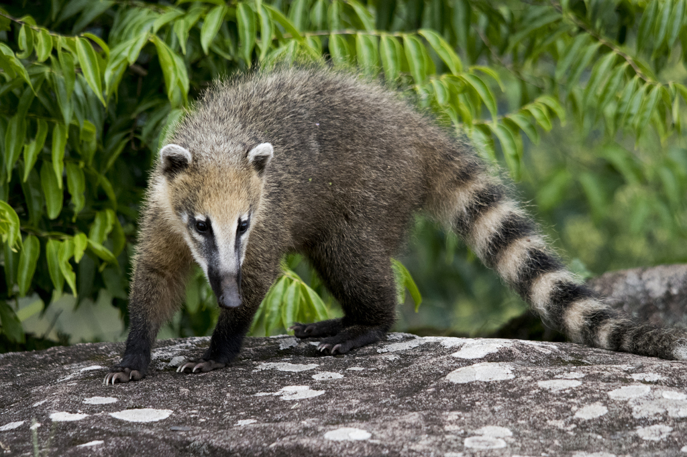

Coati
Poner el mouse abajo para mas informacion
Es un género con dos especies de pequeños mamíferos omnívoros americanos de la familia de los prociónidos. Habita desde el sur de Estados Unidos hasta el norte de Argentina, Paraguay y Uruguay. Es un animal social y puede congregarse en grupos de más de 50 individuos
Monos cai
Poner el mouse abajo para mas informacion
Es un animal omnívoro, que se alimenta frutos e invertebrados, aunque algunas veces atrapa pequeños vertebrados, también se alimenta de otras partes de plantas. Este cébido puede encontrarse en diferentes tipos de ambientes, incluyendo la mayoría de los bosques tropicales y subtropicales, y en bosques de crecimiento secundario. Está ampliamente distribuido en Sudamérica.

Yaguarete
Poner el mouse abajo para mas informacion